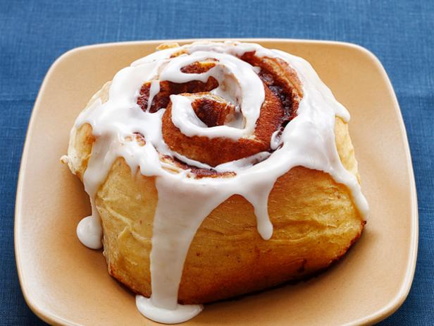

Cinnamon Bun

What is a Cinnamon Bun?
When the first Cinnabon shop opened in Seattle's SeaTac Mall in 1985.
The smell of a fresh cinnamon roll made a better marketing tool then
the buns themselves. Stores started popping out in food-courts and
everyone loved the fresh cinnamon rolls. I will list the ingrediants
and how to make a fresh cinnamon roll at home.
Ingrediants:
For the Dough:
- 1 Cup whole milk
- 1/4 ounce active yeast packet
- 1/4 cup granulated sugar
- 4 tbsp unsalted butter
- 1 large egg yolk
- 1.5 tsp vanilla extract
- 2.75 cups all-purpose flour
- 3/4 tsp salt
- 1/2 tsp freshly grated nutmeg
For the Filling:
- All-purpose flour
- 12 tbsp unsalted butter
- 1/2 cup granulated sugar
- 3tbsp ground cinnamon
For the Glaze:
- 2 cup confectioners' sugar
- 1/3 cup heavy cream
- 4 tbsp unsatled butter melted
Steps to make Cinnamon rolls:
- Make the dough: Warm the milk in a medium saucepan over low heat until it reaches about 100. Remove from the heat and sprinkle in the yeast and 1/4 teaspoon sugar (don't stir). Set aside until foamy, 5 minutes. Whisk in the melted butter, egg yolk and vanilla
- Whisk the flour, the remaining 1/4 cup sugar, the salt and nutmeg in the bowl of a stand mixer. Make a well in the center and pour in the yeast mixture. Mix on low speed with the dough hook until thick and slightly sticky. Knead on medium speed until the dough gathers around the hook, 6 minutes. (Add up to 2 more tablespoons flour if necessary.)
- Remove the dough and shape into a ball. Butter the mixer bowl and return the dough to the bowl, turning to coat with butter. Cover with plastic wrap and let rise until doubled, 1 hour 15 minutes.
- Roll out the dough, fill and cut into buns (see Cook's Note). Butter a 9-by-13-inch baking pan; place the buns cut-side down in the pan, leaving space between each. Cover with plastic wrap and let rise until doubled, 40 minutes. Preheat the oven to 325 degrees F.
- Bake the buns until golden brown, about 35 minutes. Cool in the pan 15 minutes. Meanwhile, make the glaze: Sift the confectioners' sugar into a bowl, then whisk in the cream and melted butter. Transfer the buns to a rack and spoon the glaze on top while still warm.